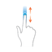
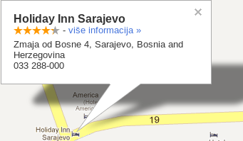

Select the topic you are interested in to get help:
After you entered the name of the city the best route will be shown.
Too see detailed route to destination put the finger in lower right corner and move it up. 
Tap the route place to see it on map.
Some cities can be virtually visited. Move the icon on map.
The temperature will be shown after you enter the name of the city. If you want more information about weather, tap at the name of the city.
You can search for hotels, institutions, restaurants...
You can get additional informations such as telephone number.
